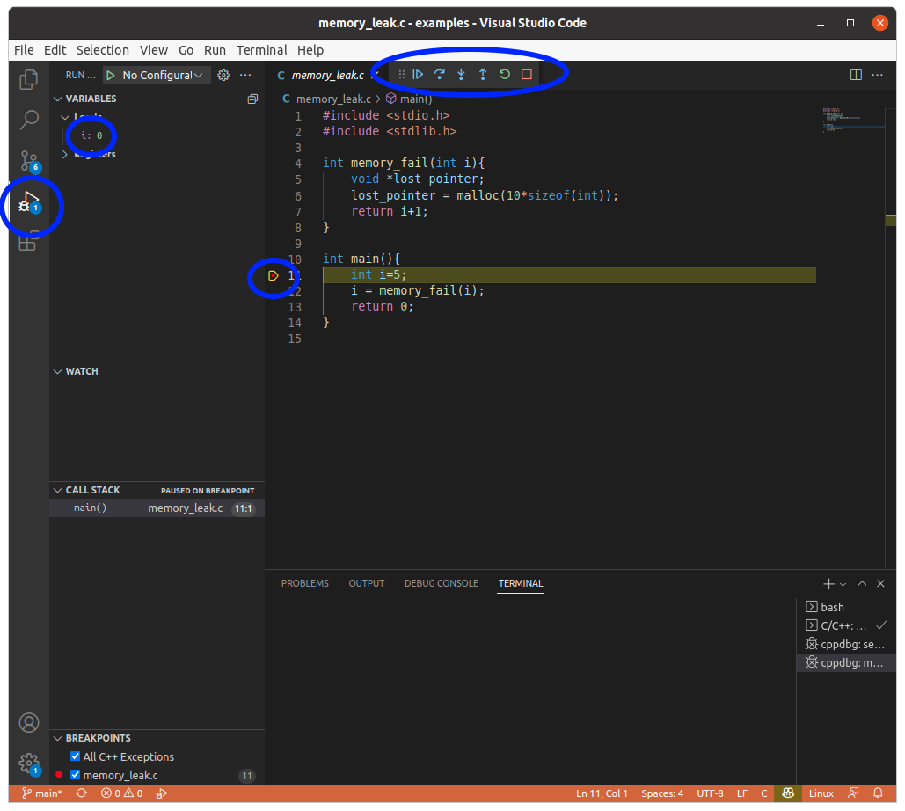

Debugging
gdb
The Gnu debugger (gdb), and many other similar programs, allow you to stop your program and inspect the state different variables, or even modify them before continuing the run. This is useful for finding more complicated issues.
Here are some useful gdb commands:
run: start running the program. It will run until it encounters a breakpoint or until the program finishes.
break: Add a breakpoint
break main: Add a breakpoint the start of the program.
break function_name: Add a breakpoint at the beginning of the functionfunction_name
break filename:N: Add a breakpoint in file filename on line Ndelete N: Delete breakpoint number N
list: Print a few lines of code around the current position.
where: Print the current position and the functions that were called
print variable: Display the value of a variable. to get there (same as the stack trace printed when an exception is raised).
next: Execute the current line and move to the next one.
step: If the line contains a function, move into it. Otherwise execute the current line.
continue: Run until the next pdb.set_trace
up: Move to the function that called this one (up the stack).
down: Move to the function called from this one (down the stack).
display variable: Display the value of a variable. It will be printed after each command.
call expression: Run arbitrary code in the debugger.
Let’s look at the memory_leak example
$ gdb memory_leak
(gdb)
First add a breakpoint at main (or wherever you think the bug might be) and start the program.
(gdb) break main
Breakpoint 1 at 0x55555555516e: file /u/24/rantahj1/unix/src/c-debugging/examples/memory_leak.c, line 10.
(gdb) run
Starting program: /u/24/rantahj1/unix/src/c-debugging/examples/memory_leak
Breakpoint 1, main () at /u/24/rantahj1/unix/src/c-debugging/examples/memory_leak.c:10
10 int main(){
(gdb)
Let’s run the first line and take a look at the variable i
(gdb) next
11 int i=5;
(gdb) next
12 i = memory_fail(i);
(gdb) print i
$1 = 5
When you want to see the details of a function, you use step instead of next to get move into it.
(gdb) step
memory_fail (i=21845) at /u/24/rantahj1/unix/src/c-debugging/examples/memory_leak.c:4
4 int memory_fail(int i){
This is very useful for figuring out what your code is doing. You can step through the program one line at a time and see how the variables change.
Debugging in Visual Studio Code
Visual studio Code includes a debugger, that also works on Windows (and programs compiled for Windows programs). The interface is graphical, but it has essentially the same commands as gdb and any other debugger. To start debugging, click the debugger symbol (play button with a bug on it) on the left side. The equivalents to the next and step commands are on top of the text view and the values of variables are displayed on the left explorer view.
These elements are highlighted in the image below.
There are many other IDEs for Windows an other operating systems. While the user interface can be different, the concepts are the same. You set a breakpoint, run the program and inspect (and possible change) the values of variables live as the program runs.
Note
Version Control
Version control programs, such as git, are probably the best debugging tool there is. You can go back in versions of your program and find where a given but was introduced. Knowing what the bug is and looking at the changes is usually enough to figure out the problem.
We will not go into this, since this is mostly about version control systems and not about C or C++ specifically. Instead, take a look at the CodeRefinery lesson on inspecting history.
And check the rest of CodeRefinery while you are there.